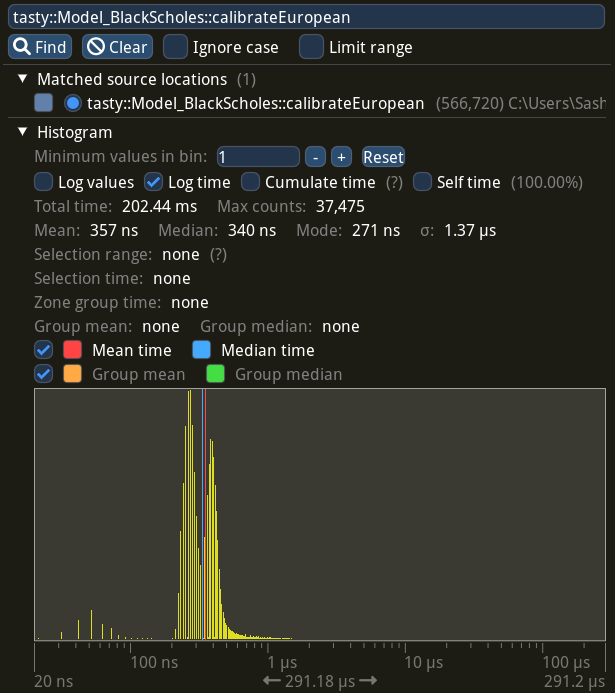
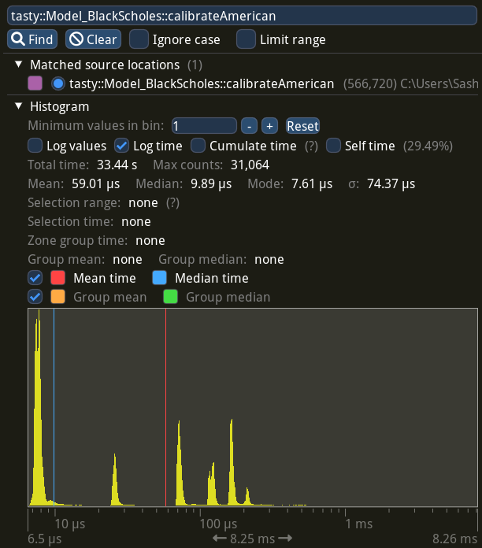
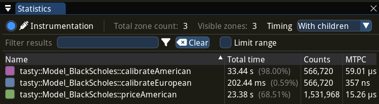

In this post, you will learn how to calibrate American options in C++ with modern methods and open-source tools, so that calibration will be really fast with source code open to review.
Source code itself is located in gituliar/tastyhedge repo on GitHub, which you can build and run it on Linux or Windows. This repo also contains all necessary market data to reproduce discussed examples.
Calibration is a process of fitting parameters of the model to the market data. The model itself is used to quantify risks due to the market moves. This is an inevitable step in building advanced hedging and trading strategies.
Black-Scholes model with early exercise is our main focus. It’s suitable for pricing equity options, which are mostly of American style. Models with the early-exercise feature have no analytical solution and usually are solved with time-consuming numerical methods. We’ll use a boundary-interpolation method, which is available in QuantLib. This modern method is very fast and is essential for anyone interested in quantitative finance.
In my previous post, I discussed in details another method for pricing American options – finite-difference method. This method is much slower, however more universal and can be used to solve a broader range of problems, similar to Monte-Carlo. Every seasoned quant I met is familiar with this method.
Introduction
Trading options is possible without a risk management strategy. You don’t necessary need to understand a pricing model and all risk measures it calculates (like delta, vega, gamma, etc.). Option prices are available in the trading app that is provided by your broker. You can buy or even sell options pretty much like you do with stocks.
A naive approach like this, will eventually lead to a disaster very soon. Hence, if your intention goes beyond betting on a stock market with options, you’d better hedge your portfolio and keep under control your risk limits.
Volatility is the only parameter of the Black-Scholes model. We consider to use this model for risk management as option prices alone can’t quantify the market risk. Your broker will likely provide implied volatility data.
Prerequisite
Imagine for a moment that we want to run a brokerage business. Apart from the main service – to execute client orders – we also want to provide volatility data, so that our clients can manage risk of their positions and survive in the whirl of the financial markets. In addition, we might consider to manage market risk of our own positions if we decide to take some risk too.
Market data is provided by the exchange. This includes option prices, volume, open interest, etc. Perfectly, we’d like to get this data in real-time, however for the calibration exercise we are fine with historical data.
Tesla is good candidates to test our approach. It is liquid and pays no dividends, which simplifies the calibration process. As a dataset, let’s take Tesla options on 2023-05-01 with a 5-min interval. There are 3'634 options in every snapshot or, 283'360 options in total.
Interest rate is another input to the Black-Scholes model. Its origin largely depends on how we going to hedge the interest-rate risk. As this is not our main focus for the moment, let’s take freely available Daily Treasury Par Yield Curve Rates from the U.S. Treasury.
The dataset with all mentioned market data is located in gituliar/tastyhedge/mds.
Risk analytics is the last piece we need to run our brokerage firm. This sort of programs is proprietary and expensive, however we can build it ourselves. After all, that’s what this post is about, so let’s dive in.
Step 1: European Calibration
The first step in our approach is to calibrate European options. The idea is to start with the European volatility and adjust it repeatedly until it replicates the American price. For more details see Step 3.
European calibration has no closed-form solution. Fortunately, there is a very efficient numerical algorithm: Let’s Be Rational by Peter Jaeckel. Its reference implementation is available in C++ and other languages. We will use it like this:
1/// File: src/Analytics/Model_BlackScholes.cpp
2
3Error
4calibrateEuropean(
5 f64 v, // option price
6 f64 s, // stock price
7 f64 k, // strike
8 f64 dte, // days to expiration
9 f64 r, // interest rate
10 f64 q, // dividend rate
11 Parity w, // put / call
12 f64& z) // implied volatility
13{
14 f64 t = dte / kDaysInYear;
15 f64 k_ = k * exp(-t * r);
16
17 z = implied_volatility_from_a_transformed_rational_guess(v, s, k_, t, w);
18
19 return "";
20}
Performance
2'800'000 opt/s is how many European options I’m able to calibrate on my machine with AMD Ryzen 9 CPU. You may wonder whether this is a lot or not ?
The options market has about 1'500'000 options listed on 5'000 stocks. Hence, we can calibrate the entire market in just 1/2 of a second on a single CPU core. Of course, this is not a nanosecond scale, required for high-frequency trading, however it’s more than enough for most hedging and trading strategies.
Advanced statistic with per-call distribution time of calibrateEuropean, collected with
Tracy profiler, looks as following:

Step 2: American Pricing
The second step is to adjust our initial estimate to a desired tolerated error. You’ll see how to do this in the next step. For now we need to learn how to efficiently price American options.
American pricing is costly because of the early-exercise feature. Fortunately, there is a modern boundary-interpolation method by Andersen et al. It’s available in QuantLib and is probably the fastest method to price American options.
QuantLib is an advanced library with many features, so we need to perform some preparation steps prior to calling the pricing algorithm:
1/// File: src/Analytics/Model_BlackScholes.cpp
2
3Error
4priceAmerican(f64 s, f64 k, f64 dte, f64 z, f64 r, f64 q, Parity w, f64& v)
5{
6 /// Anchor + Maturity
7 ///
8 auto anchor = ql::Date(31, ql::Jul, 1944);
9 auto act365 = ql::Actual365Fixed();
10 auto maturity = anchor + std::ceil(dte);
11
12 ql::Settings::instance().evaluationDate() = anchor;
13
14 /// Option Data
15 ///
16 ql::Option
17 w_ = (w == kParity_Call) ? ql::Option::Call : ql::Option::Put;
18
19 ql::Handle<ql::YieldTermStructure>
20 r_ = make_shared<ql::FlatForward>(anchor, r, act365);
21
22 ql::Handle<ql::YieldTermStructure>
23 q_ = make_shared<ql::FlatForward>(anchor, q, act365);
24
25 ql::Handle<ql::Quote>
26 s_ = make_shared<ql::SimpleQuote>(s);
27
28 ql::Handle<ql::BlackVolTermStructure>
29 z_ = make_shared<ql::BlackConstantVol>(anchor, ql::TARGET(), z, act365);
30
31 /// Black-Scholes Model
32 ///
33 auto bsm = make_shared<ql::BlackScholesMertonProcess>(s_, q_, r_, z_);
34 auto engine = make_shared<ql::QdFpAmericanEngine>(
35 bsm, ql::QdFpAmericanEngine::fastScheme());
36
37 auto payoff = make_shared<ql::PlainVanillaPayoff>(w_, k);
38 auto americanExercise = make_shared<ql::AmericanExercise>(anchor, maturity);
39 ql::VanillaOption americanOption(payoff, americanExercise);
40
41 americanOption.setPricingEngine(engine);
42
43 /// Boundary-Interpolation Pricer
44 ///
45 try {
46 v = americanOption.NPV();
47 }
48
49 /// Error Handling
50 ///
51 catch (...) {
52 std::exception_ptr ep = std::current_exception();
53 try {
54 std::rethrow_exception(ep);
55 }
56 catch (std::exception& e) {
57 return "priceAmerican : "s + e.what();
58 }
59 }
60
61 return "";
62}
Performance
45'000 opt/s is how many American options I can price on the same machine. It’s not as impressive as 2'800'000 opt/s for European calibration. But it’s about 100x faster than pricing with the finite-difference method. See my post on pricing American options on CPU and GPU for detailed benchmarks.
Advanced statistic with per-call distribution time of priceAmerican, collected with
Tracy profiler, looks as following:

Step 3: American Calibration
The third step, and the final one, is to adjust our initial estimate repeatedly until it replicates the American price to the desired tolerance. As option prices are quoted with $0.01 step, we can safely tolerate the error within that range.
Newton’s method is a classical algorithm to numerically find roots of a real-valued function. In our case, the function is a difference between the model and market prices of the option, while unknown variable is implied volatility.
The final implementation looks as:
1/// File: src/Analytics/Model_BlackScholes.cpp
2
3Error
4calibrateAmerican(f64 v, f64 s, f64 k, f64 dte, f64 r, f64 q, Parity w, f64& z)
5{
6 Error err;
7
8 /// Initial guess
9 ///
10 if (auto err = calibrateEuropean(v, s, k, dte, r, q, w, z); !err.empty())
11 return "calibrateAmerican : " + err;
12
13 /// Newton's solver
14 ///
15 f64 v_ = v;
16 s16 n = 16;
17 while (n-- > 0 && !std::isnan(z)) {
18 if (auto err = priceAmerican(s, k, dte, z, r, q, w, v_); !err.empty())
19 return "calibrateAmerican : " + err;
20 if (std::isnan(v))
21 break;
22
23 const f64 tolerance = 0.005;
24 if (std::abs(v - v_) < tolerance)
25 /// Solution found
26 return "";
27
28 /// Boundary-Interpolation Pricer
29 ///
30 f64 vUp;
31 const f64 dz = 0.0001;
32 if (err = priceAmerican(s, k, dte, z + dz, r, q, w, vUp); !err.empty())
33 break;
34
35 /// Finite-difference derivative
36 ///
37 f64 dvdz = (vUp - v_) / dz;
38 z -= (v_ - v) / dvdz;
39 }
40
41 /// No solution
42 ///
43 z = NaN;
44 return err;
45}
Performance
16'500 opt/s is how many American options I can calibrate on my machine. Effectively, we make 3 pricing calls per calibration. It’s 170x slower than European calibration with Let’s Be Rational by Jaeckel, but much faster comparing to the finite-difference.
Advanced statistic with per-call distribution time of calibrateAmerican, collected with
Tracy profiler is shown below.
The distribution indicates that:
- Deep in- and out-the-money options are cheap to calibrate, as the volatility is the same for European and American cases, hence the initial guess is already an answer, see the biggest spike around 10 us region (to the left of the median time).
- At-the-money options, on the other hand, require several adjustment steps, hence more
priceAmericancalls. See spikes around 100 us region:

Conclusion
In order to build advanced hedging and trading strategies, portfolio managers need to quantify market risk of their portfolios. This is what pricing models are used for.
In this post, we saw how to calibrate the Black-Scholes model to Tesla American option prices and yield curve rates using C++ and modern quantitative methods and demonstrated how it performs on the modern AMD Ryzen 9 CPU.
Our approach allows to calibrate 16'500 opt/s on a single CPU core. At this speed we can calibrate mid prices for the entire market of 1'500'000 options listed on 5'000 stocks in just 45 s.
Advanced statistic for various functions, collected with Tracy profiler, looks like this:
